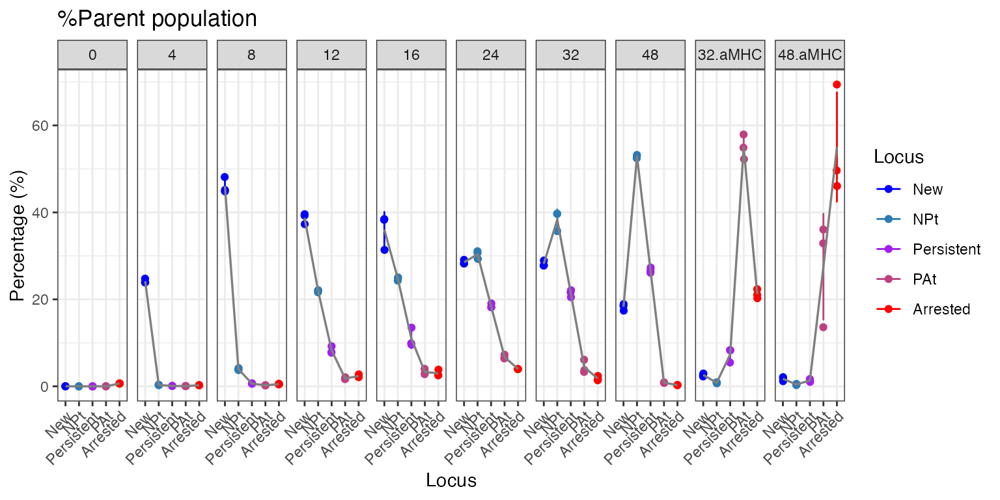
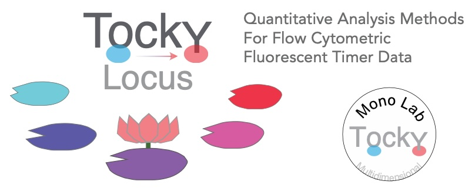
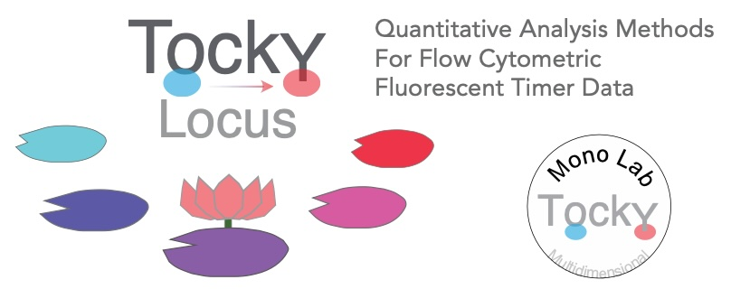

Introduction to Tocky Locus Analysis
Dr. Masahiro Ono
2024-11-15
Source:vignettes/TockyLocusAnalysis.Rmd
TockyLocusAnalysis.Rmd
Introduction
Fluorescent Timer proteins uniquely change their emission spectra over time and serve as powerful tools for monitoring the dynamic processes within cells. Our recent efforts have successfully implemented data preprocessing methods in the TockyPrep package. However, it is still challenging to analyze Timer fluorescence dynamics and apply quantitative and statistical analysis methods. To overcome these challenges, the TockyLocus package has been developed. This R package provides quantitative analysis methods, statistical methods, and visualization techniques dedicated for Timer fluorescence data analysis.
Aim
The aim of the TockyLocus package is to standardize quantitative analysis and visualization techniques for flow cytometric Fluorescent Timer data. It focuses on data categorization using Timer Angle data, which represents the temporal maturation dynamics of Timer proteins.
Relationship to the package TockyPrep
The TockyPrep package facilitates data preprocessing for flow cytometric Fluorescent Timer data. The TockyLocus package utilizes this preprocessed data to apply its advanced quantitative and visualization methods.
Getting Started with TockyLocus
To begin using TockyLocus, install both TockyLocus and TockyPrep packages from GitHub:
# Install TockyPrep and TockyLocus from GitHub
devtools::install_github("MonoTockyLab/TockyPrep")
devtools::install_github("MonoTockyLab/TockyLocus")Sample Workflow
This section guides you through a typical analysis workflow using TockyLocus to process flow cytometric data of cells expressing Fluorescent Timer proteins, covering data import, preprocessing application, and basic visualization techniques.
Data Preprocessing Using TockyPrep
First, load the necessary packages.
Load example data included in the TockyLocus package as follows:
# Example data load
# Define the base path
file_path <- system.file("extdata", package = "TockyLocus")
# Define files
negfile <- "Timer_negative.csv"
samplefiles <- list.files(file_path, pattern = "sample_", full.names = FALSE)
samplefiles <- setdiff(samplefiles, file.path(file_path, negfile))The dataset was derived from Nr4a3 Tocky T-cells. Briefly, T-cells from Nr4a3 Tocky T cells were activated by antigen stimulation using the ova/ OT-II system, and time course analysis was performed (Bending et al. (2018)).
| Group | Time (h) | Treatment |
|---|---|---|
| 0 | 0 | Stimulation from 0h |
| 4 | 4 | Stimulation from 0h |
| 8 | 8 | Stimulation from 0h |
| 12 | 12 | Stimulation from 0h |
| 16 | 16 | Stimulation from 0h |
| 24 | 24 | Stimulation from 0h |
| 32 | 32 | Stimulation from 0h |
| 48 | 48 | Stimulation from 0h |
| 32.aMHC | 32 | Stim. till 24h, then suspended |
| 48.aMHC | 48 | Stim. till 24h, then suspended |
Execute data preprocessing using TockyPrep:

Define sample and negative control files using the
prep_tocky function
# Preprocessing data
prep <- prep_tocky(path = file_path, samplefile = samplefiles, negfile = negfile, interactive = FALSE)The function timer_transform not only imports data but
also normalize and transform Timer blue and red fluorescence data.
# Normalizing and transforming data
x <- timer_transform(prep, blue_channel = 'Timer.Blue', red_channel = 'Timer.Red', select = FALSE, verbose = FALSE)Check the class of the transformed object:
class(x)## [1] "TockyPrepData"
## attr(,"package")
## [1] "TockyPrep"To effectively visualize the processed data, define sample grouping
using the function sample_definition.
The example file sampledefinition.csv provides the
standard form. Use read.csv to create a data.frame onject, which can be
used as input into sample_definition.
sample_definition <- read.csv(file.path(file_path, 'sampledef.csv'))
sample_definition <- as.data.frame(sample_definition)
head(sample_definition)## file group
## 1 sample_0hrs_R1.csv 0
## 2 sample_0hrs_R2.csv 0
## 3 sample_0hrs_R3.csv 0
## 4 sample_4hrs_R1.csv 4
## 5 sample_4hrs_R2.csv 4
## 6 sample_4hrs_R3.csv 4
# Normalizing and transforming data
x <- sample_definition(x, sample_definition = sample_definition, interactive = FALSE)Alternatively, define sample grouping for effective visualization by
using the sample_definition function with the
interactive = TRUE option. This approach will generate a
CSV file in your working directory. You should edit this CSV file to
include sample grouping information in the group column.
After editing, follow the prompts in the interactive session and press
RETURN upon completion.
Visualize the processed data with a density plot using the function
plotAngleDensity.
# Visualizing the results
plotAngleDensity(x)## Picking joint bandwidth of 1.9
The plotAngleDensity function offers preliminary
insights into the dynamics of Timer fluorescence. However, this
visualization method has certain limitations that will be discussed in
subsequent sections.
Tocky Locus Analysis
Use the TockyLocus function to apply the Tocky Locus
approach to your data:
x <- TockyLocus(x)The TockyLocus function categorizes Timer Angle data
into five categories. To visually represent these categories, the
plotTockyLocusLegend function can be used to produce a
schematic figure of the five Tocky Locus categories.
plotTockyLocusLegend(mar_par = c(2, 2, 4, 2))
For quality checks of the Tocky Locus categorization, use the
plot_tocky_locus function. The option n = 4
specifies the number of columns in the multi-panel plot.
plot_tocky_locus: The QC plot for TockyLocus
plot_tocky_locus(x, n = 4)## ..
Note that the sample at 0 hours, taken before antigen stimulation, shows some pure red fluorescence. This phenomenon is due to the memory phenotype T-cells accumulated in vivo in OT-II Nr4a3 Tocky mice. These memory phenotype T-cells are considered self-reactive and can develop in OT-II Nr4a3 Tocky mice as the Rag genes are sufficiently expressed (Ono and Satou (2024)).
plotTockyLocus: The Plot Function for TockyLocus
To visualize the Timer Angle dynamics per Tocky Locus, use the
plotTockyLocus function. The default ‘faceted’ plot
produces multiple panels for different groups. Note that the percentage
data are based on the percentages within the parent population, which in
this dataset, is CD4+ T cells.
plotTockyLocus(x, verbose = FALSE)
If you prefer not to use faceting, employ the
group_by = FALSE option to generate a Tocky Locus plot
without multiple panels.
plotTockyLocus(x, group_by = FALSE, verbose = FALSE)
Further Reading
Your data is now ready for statistical testing and downstream analysis. For more information and detailed methodology, refer to our paper:
Masahiro Ono (2024). TockyLocus: Quantitative Analysis Methods for Flow Cytometric Fluorescent Timer Data. arXiv:2411.09386 [q-bio.QM]. Available at:https://arxiv.org/abs/2411.09386.
 
